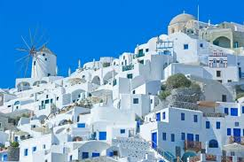
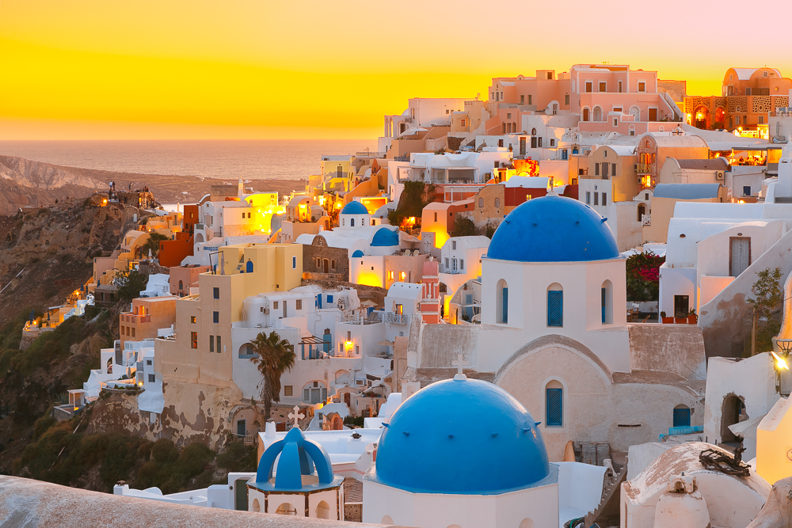
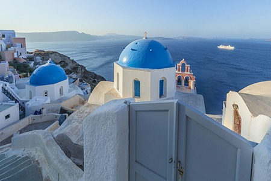
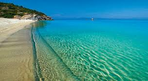

Греческие острова




Санторини - это остров, который превзошел все мои ожидания. Белоснежные домики, словно вырезанные из скал, синие купола церквей и бескрайнее Эгейское море создают картину, достойную открытки.
Закаты в деревушке Ойя - это отдельное волшебство. Сотни людей собираются каждый вечер, чтобы увидеть, как солнце медленно погружается в море, окрашивая небо в невероятные оттенки розового и оранжевого.
Греческая кухня покорила мое сердце: свежие морепродукты, хрустящий греческий салат, ароматная мусака и, конечно же, узо под звездным небом.
Древняя история острова ощущается в каждом камне. Раскопки Акротири показали, что здесь когда-то процветала минойская цивилизация.
Рекомендации для посещения
- Деревня Ойя - лучшие закаты в мире! Приходите за час до заката, чтобы занять хорошее место.
- Красный пляж - уникальный пляж с красными скалами, возьмите водную обувь.
- Акротири - древний город, погребенный под вулканическим пеплом, "греческие Помпеи".
- Винодельни - попробуйте местное вино Assyrtiko с видом на кальдеру.
- Фира - столица острова, прогуляйтесь по краю кальдеры, множество магазинов и ресторанов.
- Круиз к вулкану - посетите действующий вулкан и горячие источники.